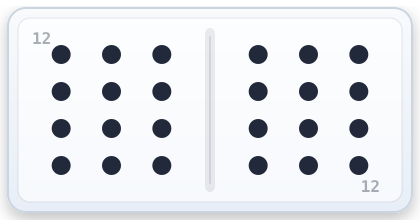
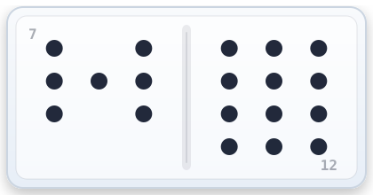
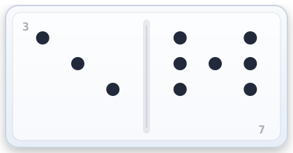

Objective: Finish each round with the fewest pips left in your hand.
A match is 13 rounds (12|12 down to 0|0). Your total score is the pips you still have at the
end of each round — lowest total wins.

→

→

-
Setup: Each player starts with 15 tiles. The rest become the
boneyard (your draw pile).
Starter tile: The round begins with the required double (Round 1 = 12|12, then 11|11, etc).
If nobody has it in their initial 15, the game will automatically draw one tile per player
in order until the starter is found. Subsequently the next player will play a domino that has at least one side matching the starter double.
-
What you can play on: You’ll usually play on:
- Your train (your personal row)
- Double 12 Express (the public center line)
- OPEN trains (other players’ trains marked OPEN)
Each train has an open end (shown as “+ N”). Your tile must match that number.
-
Your turn: Play one tile that matches a train’s open end.
(In Beginner/Training Mode, playable tiles glow and valid trains glow.)
-
No playable tile? Draw one from the boneyard.
If the drawn tile can be played, you may play it. If you still can’t play, you pass.
If your train becomes OPEN, other players can play on it. A train becomes OPEN when that player cannot play any of their own tiles on their own train, and has to pass. It stays OPEN until that player can play on it again.
-
Doubles & “satisfying” a double: A double is a tile like 7|7.
When you play a double, it must be satisfied by playing another tile onto that same train
that matches the double’s number.
- If you can’t satisfy it, you draw one and try again.
- If you still can’t, you pass — and the next player must satisfy it (draw one if needed).
- Play can’t continue normally until the double is satisfied. If no player can satisfy the double, the round ends in stalemate and all players score their remaining tiles.
-
Round end & scoring: A round ends when someone plays their last tile.
Everyone else adds up the pips left in their hand and that gets added to their score.
The small badge 15
next to each player’s train shows how many tiles they still have.
Strategy (the fun part):
- Plan chains on your own train (spot tiles you can play back-to-back).
- Dump high pips early — they hurt the most if you get stuck when the round ends.
- Use the Express Line and OPEN trains as a pressure valve to shed “extra” tiles.
- Keep a couple “connector” tiles (like 12|7 or 7|3) so you’re not trapped by one number.
- When a double appears, treat it like a big red stop sign: someone must satisfy it.
Beginner/Training Mode: choose Preset → Beginner Friendly in the Rules screen.
You’ll get bright highlights for playable tiles, playable trains, and OPEN trains — and it will auto-switch the theme to Neon.